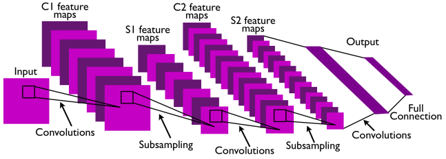
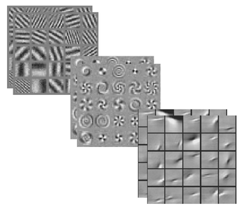
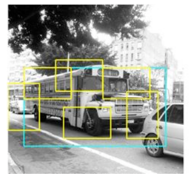
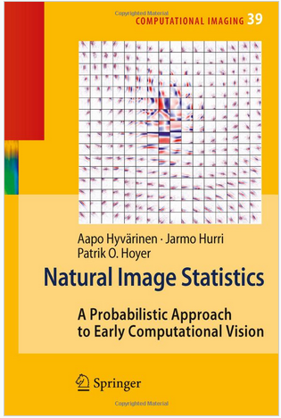

 |
 |
 |
 |
 |
 |
 |
|
 |
|
|
 |
|
 |
Although there is no official class textbook, we will make some use of some material from "Natural Image Statistics: A Probabilistic Approach to Early Computational Vision" by Hyvarinen, Hurri, Hoyer (Springer 2009). | ||
| Date | Topic | Readings | Notes |
| Introduction / background | |||
|---|---|---|---|
| Sept. 4 | Lecture: Introduction | notes | |
| Sept. 10 | Probability/linear algebra review |
|
notes |
| Sept. 11 | Python review |
|
notes
logsumexp.py |
| Learning about images | |||
Other readings
|
|||
| Sept. 17 | Filtering, convolution, phasor signals |
Reading 1: Possible Principles Underlying the Transformations of Sensory Messages. (Barlow, 1961) [pdf] |
notes |
| Sept. 18 | Fourier transforms on images | notes | |
| Sept. 24 | Sampling, leakage, windowing | Reading 2: sparse coding (Foldiak, Endres; scholarpedia 2008) |
Reading 1 due notes |
| Sept. 25 | PCA, stationarity and Fourier bases |
notes Assignment1 (worth 10%) |
|
| Oct. 1 | PCA and whitening cont'd. | Reading 3: Emergence of Simple-Cell Receptive Field Properties by Learning a Sparse Code for Natural Images. (Olshausen, Field 1996). [pdf] |
Reading 2 due |
| Oct. 2 | Some facts about vision in the brain |
Assignment 1 due solution to question 3 solution to question 4 logreg.py minimize.py (required if using Logreg.train_cg) notes |
|
| Oct. 8 | Vision in the brain cont'd. |
Reading 4: The ``independent components'' of natural scenes are edge filters. (Bell, Sejnowski 1997) [pdf] |
Reading 3 due |
| Oct. 9 | Whitening vs independence, ICA |
Assignment2 (worth 10%) notes |
|
| Oct. 15 | ICA cont'd. |
Reading 5: Review backprop (aka error backpropagation).
For example, by watching week 5
of this course
or by reading Bishop, chapter 5. If/once you know backprop, check out theano and these tutorials. |
Reading 4 due |
| Oct. 16 | Overcomplete codes, energy based models |
Assignment 2 due notes solution to questions 3 and 4 |
|
| Oct. 29 | Restricted Boltzmann machines | Reading 6: Feature Discovery by Competitive Learning (Rumelhart, Zipser; 1985) [pdf] (email instructor if you cannot access the pdf) |
notes Reading 5 due |
| Oct. 30 | Competitive Hebbian learning, k-means |
notes |
|
| Nov. 5 | Autoencoders, Convolutional networks |
Reading 7: Pick one of the papers we will discuss on Nov 6 and Nov 12 (other than the one you present) and read it very carefully. In your email, say which one you read. |
notes Reading 6 due |
| Nov. 6 | Paper presentations, discussion |
|
Assignment3 (worth 10%) |
| Nov. 12 | Paper presentations, discussion |
Reading 8: Spatiotemporal energy models for the perception of motion. Adelson and Bergen, 1985 [pdf] |
Reading 7 due |
| Learning about motion, geometry, invariance, shape | |||
Other readings
|
|||
| Nov. 13 | Learning about relations |
Assignment 3 due solution to question 2 slides from my cifar tutorial |
|
| Nov. 19 | Paper presentations, discussion |
Reading 9: Pick one of the papers we will discuss on Nov 19 and Nov 20 (other than the one you present) and read it very carefully. In your email, say which one you read. DeViSE: A Deep Visual-Semantic Embedding Model Frome et al. NIPS 2013 [pdf] (Sebastien O.) Learning hierarchical invariant spatio-temporal features for action recognition with independent subspace analysis. Le, et al. CVPR 2011 [pdf] (David K.) |
Reading 8 due |
| Nov. 20 | Paper presentations, discussion |
Deep Learning of Invariant Features via Simulated Fixations in Video. Zou et al. NIPS 2012. [pdf] (Gabriel F.) Learning to combine foveal glimpses with a third-order Boltzmann machine. H. Larochelle and G. Hinton. NIPS 2010. [pdf] (Eugene V.) |
|
| Nov. 26 | Learning about relations cont'd. |
Reading 10: Pick a highly relevant related work for your class project, and read it very carefully. In your email, say which one you read. (due Dec. 3) |
Reading 9 due |
| Nov. 27 | Project discussions | ||
|
Nov. 28, 12:30pm Location: Pav. Andre-Aisendstadt, rm 3195 |
Structured prediction, misc, wrap-up |
notes |
|
|
|
|||